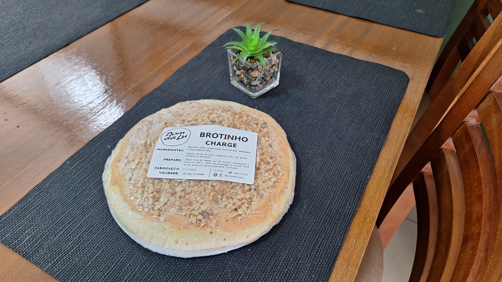
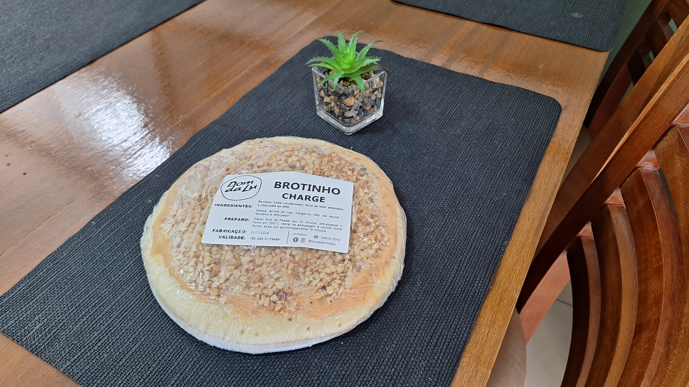

Idealizado em 2020, durante a pandemia do COVID-19, O Dom da Lu surgiu como uma alternativa de renda para a proprietária Luciane Rafeal Oliveira e seus parceiros, trazendo uma abordagem diferente e viável para aquele período, as comidas congeladas. Inicialmente apenas no ramo das pizzas congeladas, o Dom da Lu Congelados começou a crescer e aumento seu cardápio, dando diferentes opções de alimentos prontos, sempre com o enfoque de serem saudáveis, caseiros e muito gostosos. Depois de alguns tempo, o Dom da Lu teve enfim morada própria, se estabelecendo no Centro de Araranguá, na Av. 15 de Novembro, 1764. Devido a localização privilegiada, a ideia de um buffet ao meio-dia logo veio, e se mostrou um grande sucesso. Com o movimento continuo do centro da cidade e o pedido dos clientes mais afincos, também foi possível proporcionar o café da tarde, com alimentos focados em serem sem glúten e sem lactose, contudo, podendo ter a contaminação cruzada. Com a prática de já gerenciar outros restaurantes de sucesso, o Dom da Lu continua a crescer, se empenhando em sempre proporcionar comidas saborosas e um ambiente agradável e acolhedor.


 

Homenageando a cidade de Araranguá, o restaurante é decorado com fotos do Morro dos Conventos, ponto turístico e cartão postal da cidade.
Do fotografo Enio Frassetto, as fotos apresentam as belezas naturais que a região local possui.

Luciane Rafael Oliveira, mãe do Pedro, empresária, Araranguaense, apaixonada por cavalos. Desde muito cedo demonstrou interesse pela culinária, vindo a cursar Turismo e Gastronomia, na UNISUL, onde se formou, tendo como tema de seu TCC uma loja de produtos congelados. Sócia do Restaurante Santo Réu, e fundadora do Dom da Lu Congelados, apresentando uma linha de congelados saudáveis e com gosto de comida caseira.
Av. 15 de Novembro - 1764
Centro - Araranguá